Stress concentration in a thin plate with a hole
1 Description
In this problem we investigate the stress concentration in a thin steel plate under uniform axial tension, using the stress-concentration factor from Roark’s Formulas for Stress and Strain, Table 17.1, case 7a [1].
2 Workflow in Abaqus/CAE
2.1 Model definition
Create a new model database and rename the default model to
PWH-KtEdit the model attributes and provide a description of the consistent unit system in the Descriptions field. This model uses the IPS consistent unit system. We recommend entering the following:
# CONSISTENT UNIT SYSTEM: IPS ## Fundamental Units Length: in Mass: slinch = ( lbf * s^2 ) / in Time: s ## Derived Units Mass Density: slinch / in^3 Force: lbf Pressure: lbf / in^2
2.2 Parts module
Click on the Create Part icon
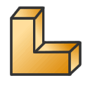
to open the Create Part dialog to create a new part with the name:Plate. You should ensure the dialog’s parameter-value pairs are set as shown in the table and image below:
| Parameter | Value |
|---|---|
| Modeling Space | 3D |
| Type | Deformable |
| Base Feature Shape | Solid |
| Base Feature Type | Extrusion |
| Approximate size | 20 |
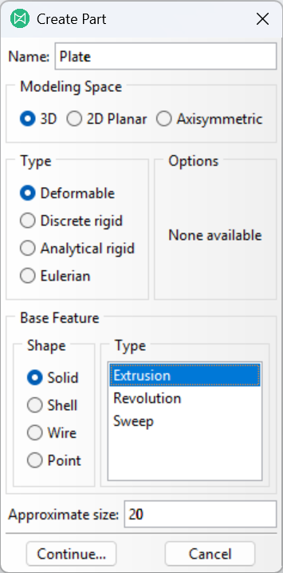
After entering these values into the dialog, click the Continue button to proceed to sketching.
Begin by creating a vertex at the origin by clicking the Create Isolated Point icon and typing 0,0 into the dialog box at the bottom-left of the viewport and then pressing Enter on your keyboard:
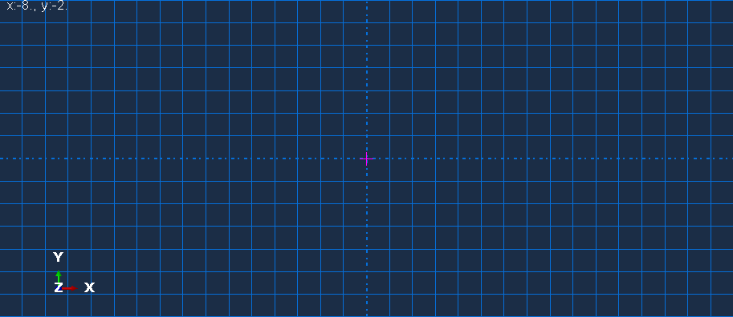
Next click the Add Constraint icon
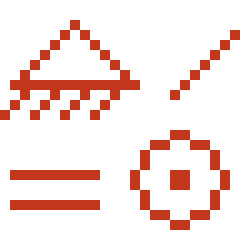
to open the Add Constraint dialog box and then click on the Fixed item as shown in the image below.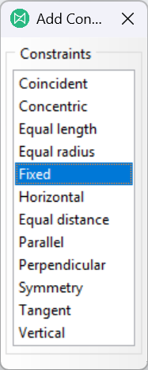
The viewport will prompt you to select the entities for the fixed constraint; select the vertex we just created and then click the Done button. You should now see an annotation next to the vertex denoting that a “fixed” constraint has been applied.
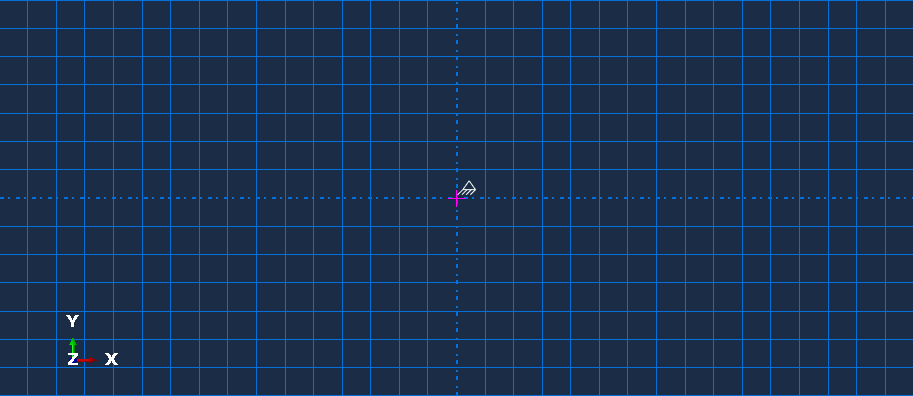
Next click the Create Lines: Rectangle (4 Lines) icon
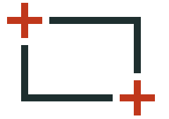
and pick a starting corner and ending corner by clicking in the viewport. The precise coordinates don’t matter since we will specify these via dimensioning and constraints.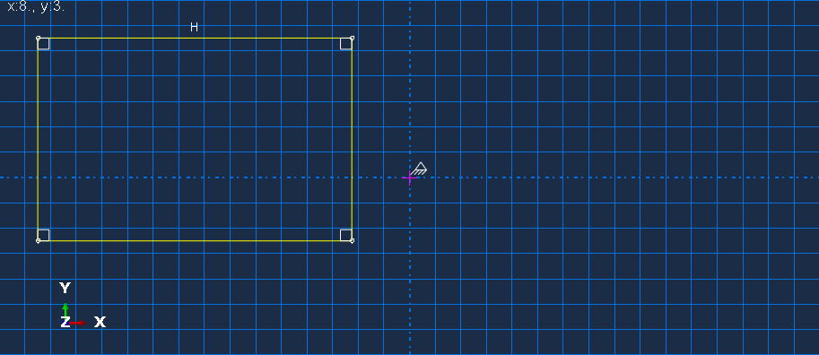
Opening the Add Constraints dialog again, click on the Equal distance item. The viewport will prompt you to select:
- The first line (or vertex)
- The next line (or vertex)
- The vertex that will be equidistant to the two lines that we will select.
The entities, and the recommended order that you should select them in, are shown in the figure below.
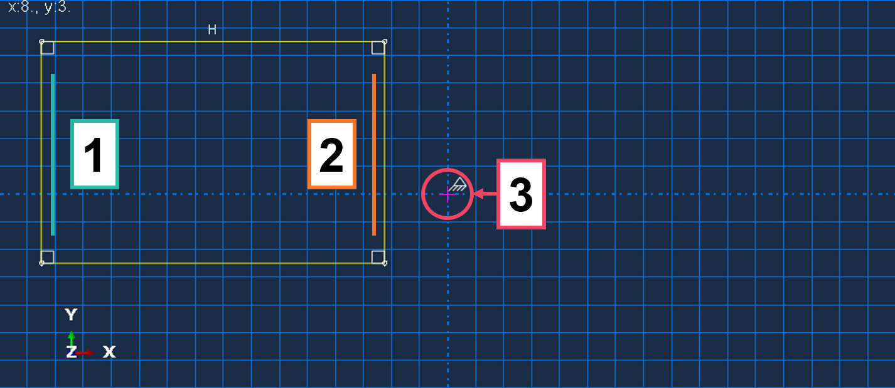
After making these selections the rectangle should update such that the two selected lines are equidistant from the vertex as shown below.
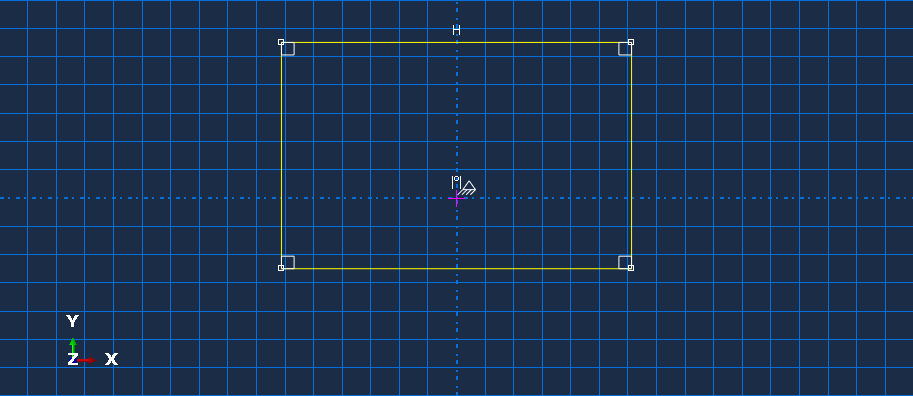
Next we apply another equidistant constraint, this time selecting the two horizontal lines of the rectangle.
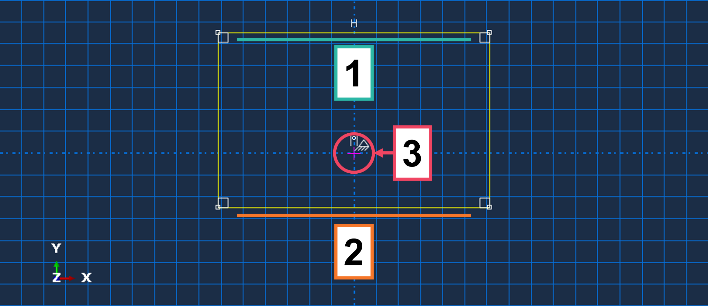
Which should update the rectangle once again.
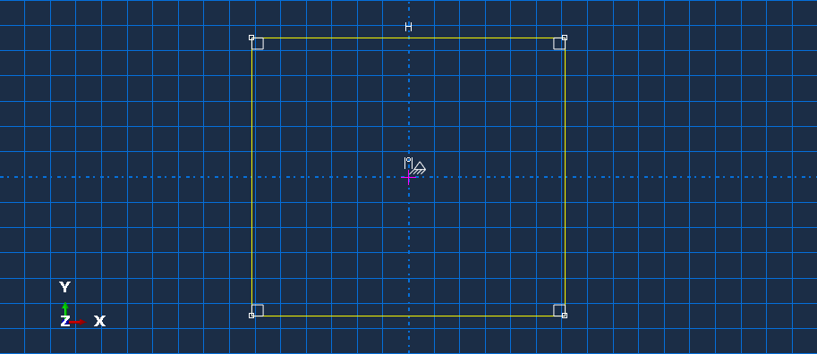
Next, click on the Add Dimension icon
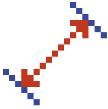
, after which the viewport will prompt you to select one of the geometric entities to dimension. Select one of the vertical lines, enter5 into the viewport prompt, and then click Done.
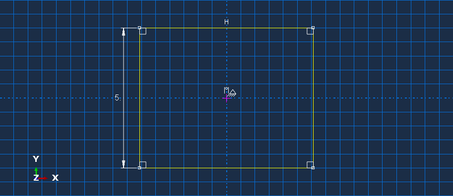
The Add Dimension tool should still be active — if not, click the Add Dimension icon again — this time select one of the horizontal lines and assign a dimension of 10 to the line. The rectangle’s curves should change color from yellow to green, signifying that they are fully constrained.
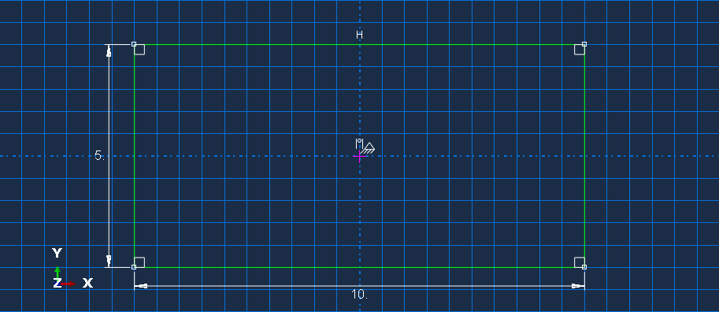
Next click the Create Circle: Center and Perimeter icon
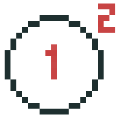
. The viewport will prompt you to pick a center point for the circle; click on the vertex we created at the beginning of this sketch. This will automatically constrain the center of the circle to be coincident to this vertex. The viewport will then prompt you to pick a perimeter point; the precise location doesn’t matter as we will constrain this point in a follow-up step.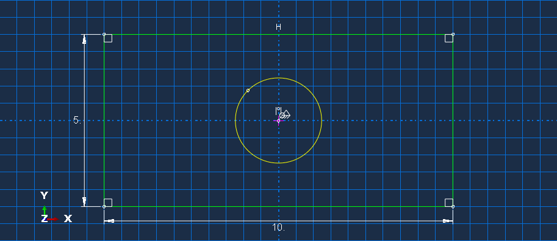
Next, while not strictly necessary, we want to constrain the circle’s perimeter point to lie on the y-axis. To do this we will create a vertical construction line by “clicking and holding” on the Create Construction: Oblique Line Thru 2 Points icon
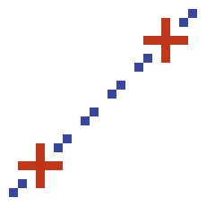
, which will then list additional options: click on the Create Construction: Vertical Line Thru Point icon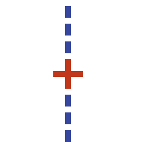
and then click on the same vertex that we created at the beginning of this sketch.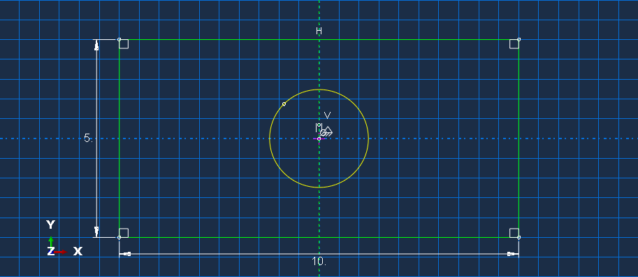
Then open the Add Constraint dialog again and select the Coincident item. When prompted by the viewport, select the circle’s perimeter point and then the vertical construction line for the two entities to include in the coincident constraint.
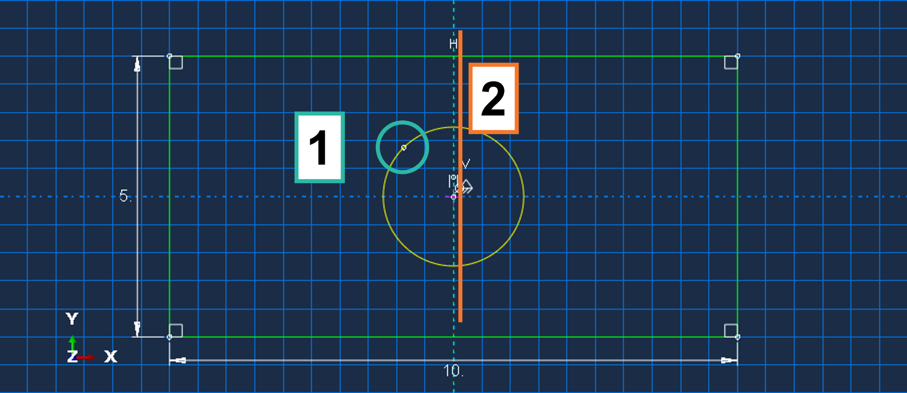
The perimeter point should now snap to the vertical line.
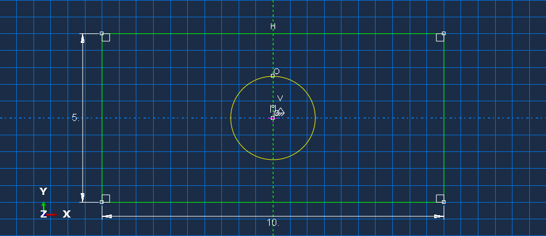
Next click on the Add Dimension icon again and click on the circle to assign a radius dimension, entering 1 as the radius value.
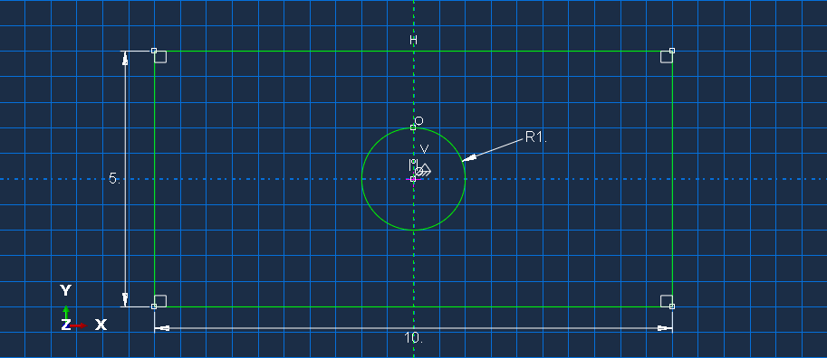
The sketch is now fully-defined and fully-constrained — it is finished! We now want to click on the Done button next to the viewport prompt of Sketch the section for the solid extrusion. If you do not see that prompt, carefully click on the Cancel icons
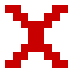
until you do.You should now see the Edit Base Extrusion dialog box which will prompt you to provide the extrusion depth, which should be 0.1. After entering this value, click the OK button.
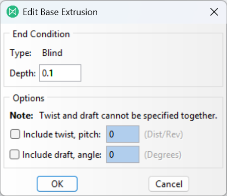
You should now see a solid geometry rendered within the viewport, similar to that shown in the following image:
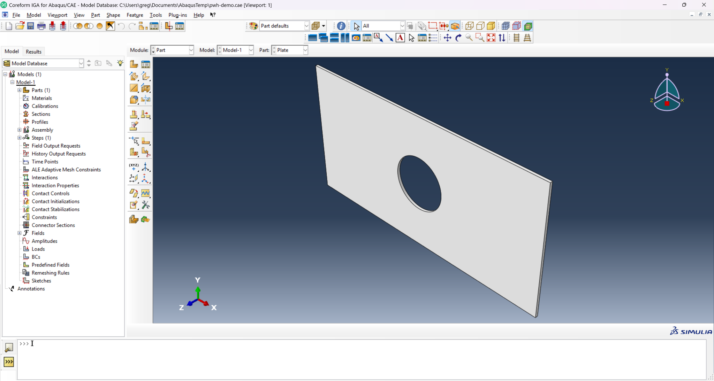
This concludes the Part module portion of the workflow.
2.3 Property module
Click on the Create Material icon
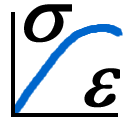
to open the Create Material dialog to create a new material calledSteel. Since we will be performing a static analysis we do not need to provide a mass density, but do need to provide the isotropic elastic moduli from the table below. The values are also visible in the Edit Material screenshot below.
| Material Property | Value | Units |
|---|---|---|
| Young’s Modulus | \(30 \times 10^6\) | \(\text{lbf}/\text{in}^2\) |
| Poisson’s Ratio | \(0.29\) | – |
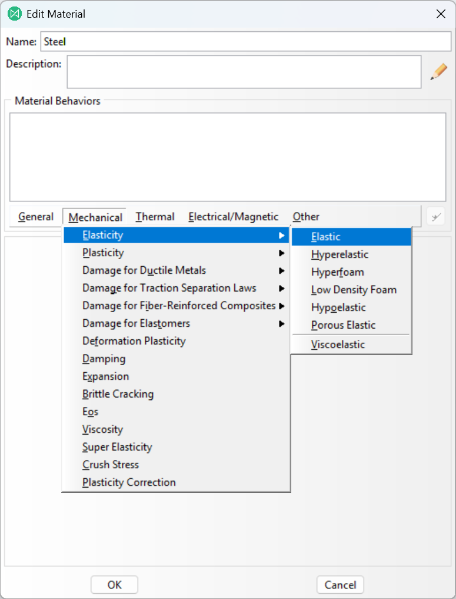
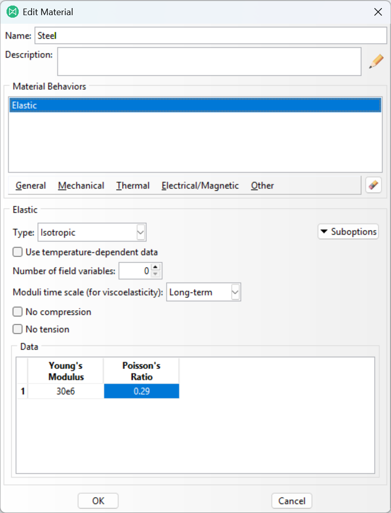
After entering these values, click the OK button.
Next, click on the Create Section icon
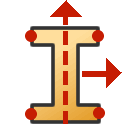
to open the Create Section dialog to create a new section, namedSection-Solid-Steel. The category of section should be Solid and the Type should be Homogeneous, as demonstrated in the image below.
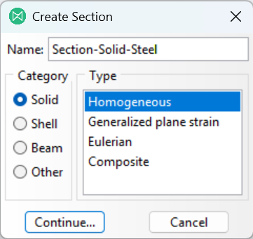
After entering these values, click the Continue button.
At the Edit Section dialog box choose the Steel material within the Material selection dialog.
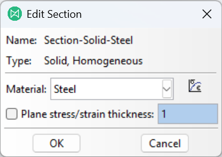
Then click the OK button.
Next, click on the Assign Section icon
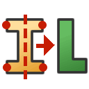
to assign theSection-Solid-Steel to the entire part. This will prompt you to make a region selection within the viewport and will provide you with the option to create a named set for the selected region. We recommend naming this set WholePart, though you may choose any name or even unselect the Create set option to avoid creating a set1.
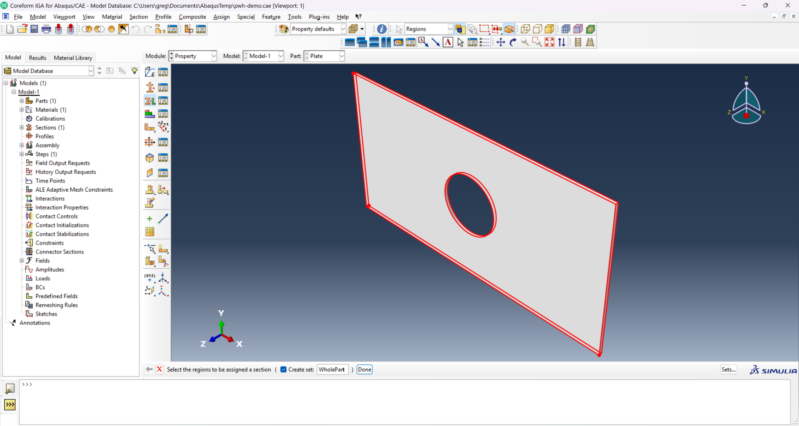
At the Edit Section Assignment dialog box choose the Section-Solid-Steel section within the Section selection dialog.
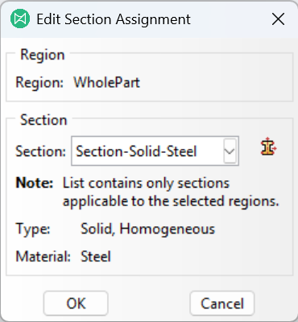
Then click the OK button. The part should now be colored green, signifying that a section has been properly assigned.
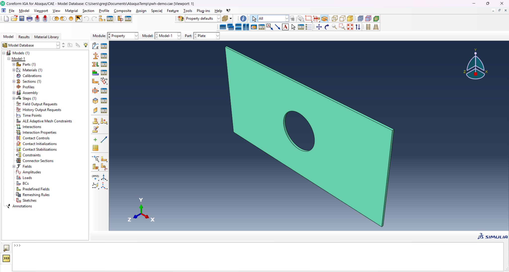
This concludes the Property module portion of the workflow.
2.4 Assembly module
Click on the Create Instance icon
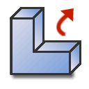
to open the Create Instance dialog to create a new instance. Select thePlate part as the entity to instance in the assembly, keeping the default Dependent (mesh on part) option for the Instance Type option.
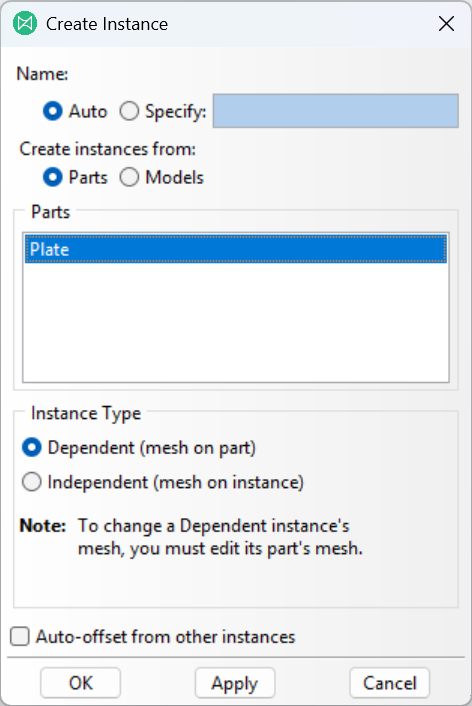
Then click the OK button to generate the instance. You should now see an instance of the part, colored blue, in the viewport.
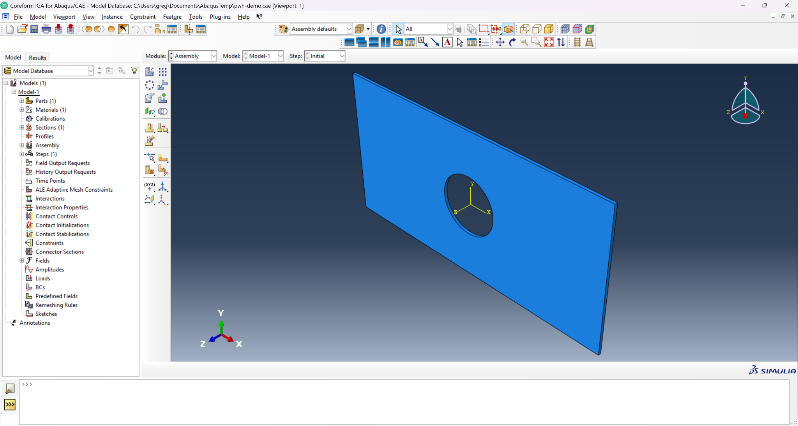
This concludes the Assembly module portion of the workflow.
2.5 Step module
2.5.1 Define the step
Click on the Create Step icon
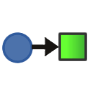
to open the Create Step dialog to create a new step. Name our new stepApply-Roark-Conditions, make sure the General procedure type is selected in the selection-box, and then choose Static, General from the list of available procedures as demonstrated in the following image.
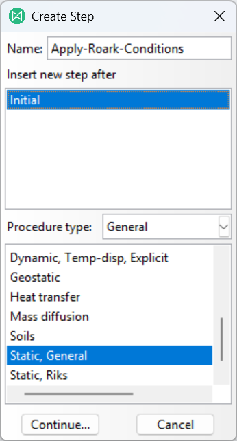
Clicking the Continue button should then display the Edit Step dialog box. We can keep the default settings, which notably will have a (pseudo)time period of 1.0, will use the small deformation assumption (Nlgeom=off), and use direct equation solvers (under the Other tab). If you’d like to provide a description, you may, but this is not required.
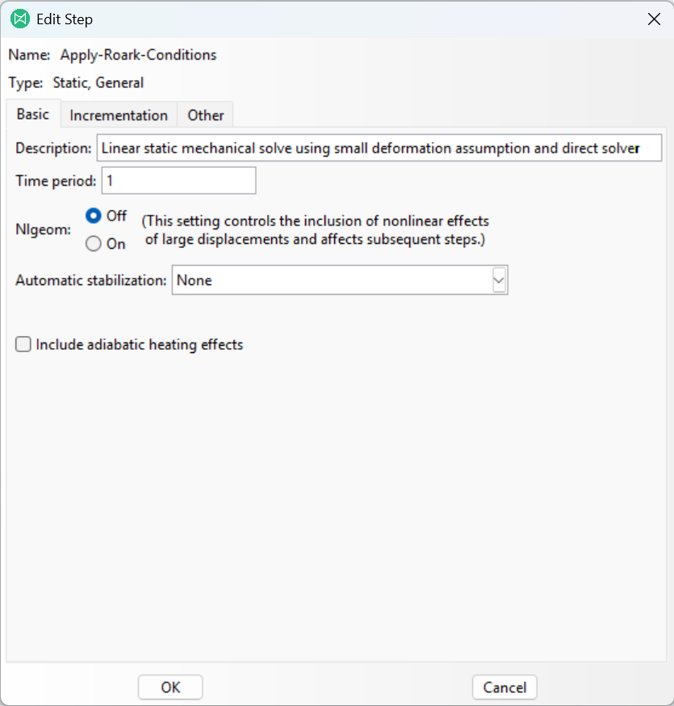
Then click the OK button to complete creating the step. If you click the Step Manager icon to the right of the Create Step icon, you should see our new step listed with a green checkmark () next to it as shown in the image below.
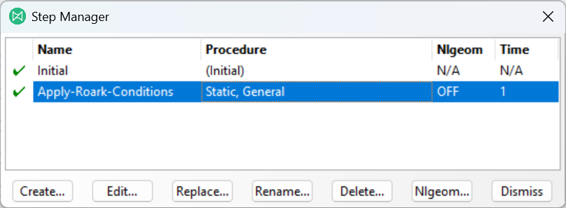
2.5.2 Define the field output
Currently, Coreform IGA for Abaqus only supports field outputs for displacement (U), stress (S), and equivalent plastic strain (PEEQ). Furthermore these are currently hard-coded to always be output for all supporting simulations. We plan to improve this functionality to provide more flexibility to users, but for now we recommend not modifying the field output.
2.5.3 Define the history output
This example does not require an Abaqus history-output request. The Coreform IGA line probe defined in the next section records the stress profile used during postprocessing.
2.5.4 Define a Coreform IGA Probe
One powerful capability provided by Coreform IGA for Abaqus are Coreform IGA Probes. Unlike other probe or history output options, which only provide results at node or quadrature point locations (which may be sparse) or only operate on results stored in output files, Coreform IGA probes allow the user to query (probe) various results2 at arbitrary locations. These are computed during the solve in a highly-accurate manner3. There are three types of probes currently implemented in Coreform IGA for Abaqus:
- Point Probe: a single probe located at an
(X,Y,Z)position. - Multipoint Probe: a probe at multiple
(X,Y,Z)locations. - Line Probe: a number of ordered points, uniformly-distributed along a line specified by two
(X,Y,Z)positions.
In this example, we will create a Line Probe along the mid-thickness of the plate, whose origin is the radius of the hole along the Y-axis and which extends along the Y-axis to the outer surface of the plate. To create the Coreform IGA Probe click on the Create Coreform IGA Probes icon  and then set the parameter-value pairs as shown in the table and image below:
and then set the parameter-value pairs as shown in the table and image below:
| Parameter | Value |
|---|---|
| Name | Probe-Stress-Profile |
| Probe Type | Line Probe |
| Instance | Plate-1 |
Start (X, Y, Z) |
(0, 1, 0.05) |
End (X, Y, Z) |
(0, 2.5, 0.05) |
| Num Points | 100 |
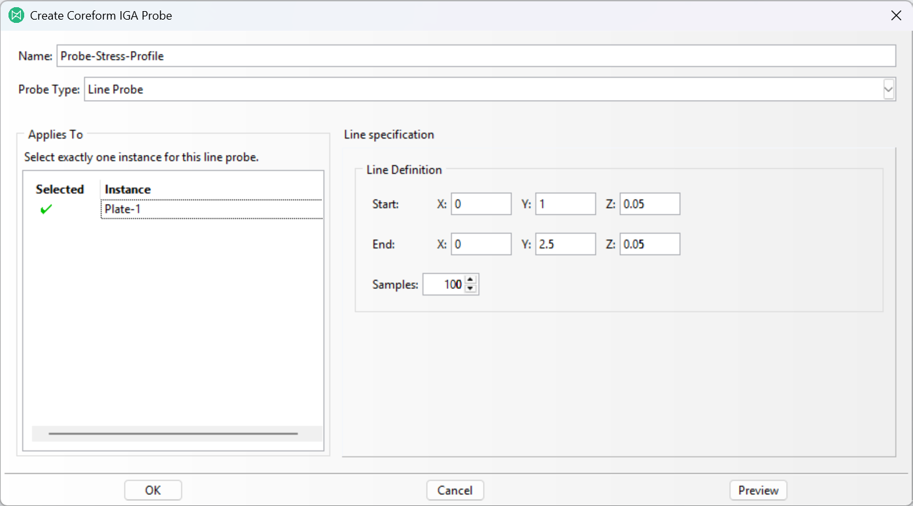
Then click the OK button to complete the creation of the Coreform IGA Probe.
This concludes the Step module portion of the workflow.
2.6 Interaction module
This problem doesn’t require any interactions, so we can skip this module.
This concludes the Interaction module portion of the workflow.
2.7 Load module
This problem utilizes a pinned displacement boundary condition on the X-minimum surface4. It also uses a small, uniformly-distributed negative pressure on the X-maximum surface5, with the pressure pointing outwards from the geometry’s interior so as to place the plate in tension.
2.7.1 Pinned displacement boundary condition
Click on the Create Boundary Condition icon
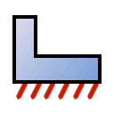
to open the Create Boundary Condition dialog to create a new boundary condition with the nameHold-XMin. In the Step selection box, be sure that our Apply-Roark-Conditions step is selected, then choose the Mechanical category and Symmetry/Antisymmetry/Encastre as the type.
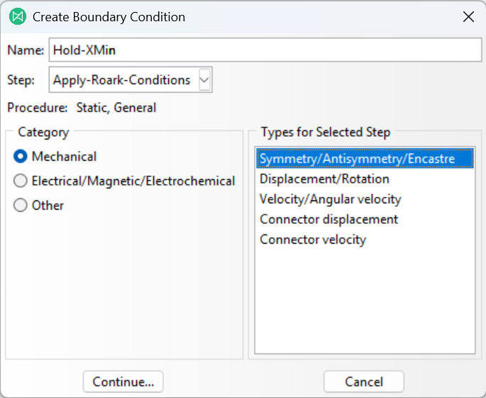
Then click the Continue button.
The viewport should now prompt you to select the regions for the boundary condition; select the X-minimum surface as described earlier. We recommend creating a set with the name XMin.
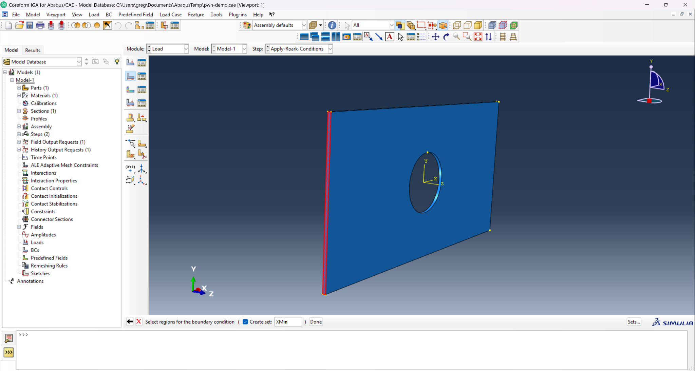
Then click the Done button.
In the Edit Boundary Condition dialog box choose the PINNED option, which will enforce zero-displacement on the surface.
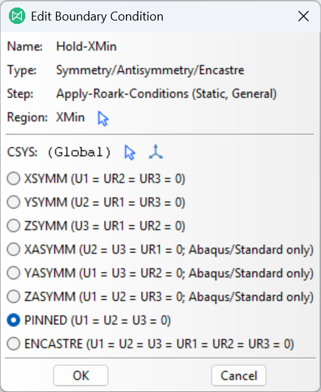
Then click the OK button to complete creating the boundary condition. If you click the Boundary Condition Manager icon to the right of the Create Boundary Condition icon, you should see our new boundary condition listed with a green checkmark () next to it as shown in the image below.
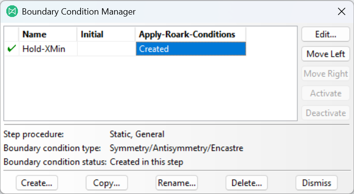
You should also see a rendering of the boundary condition within the viewport, denoting the surface and degrees-of-freedom (DOFs) that are constrained.
2.7.2 Pressure load condition
Click on the Create Load Condition icon
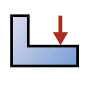
to open the Create Load Condition dialog to create a new load condition with the namePull-XMax. In the Step selection box, be sure that our Apply-Roark-Conditions step is selected, then choose the Mechanical category and Pressure as the type.
Then click the Continue button.
The viewport should now prompt you to select the regions for the load condition; select the X-maximum surface as described earlier. We recommend creating a set with the name XMax.
Then click the Done button.
In the Edit Load dialog box, set the parameter-value pairs as shown in the table and image below:
| Parameter | Value |
|---|---|
| Distribution | Uniform |
| Magnitude | -1e-6 |
| Amplitude | (Ramp) |
Then click the OK button to complete creating the load condition.
You should see an updated rendering of the previously-assigned boundary condition and now the pressure load condition within the viewport. Verify that the vectors representing the pressure condition are pointing away from the surface (i.e., in the +X direction). If they are pointing into the surface (i.e., in the -X direction) then you likely forgot the - sign in the magnitude field.
This concludes the Load module portion of the workflow.
2.8 Mesh module
To create the Coreform IGA Mesh select Part as the active Object at the top of the viewport.
This should then show a rendering of the plate, colored yellow as shown below.
Next click on the Create Coreform IGA Meshes icon in the taskpane.
In the Create Coreform IGA Mesh dialog box, ensure that the following parameter-value pairs are set as shown in the table and image below:
| Parameter | Value |
|---|---|
| Mesh Type | Immersed Rectilinear |
| Element Size | (0.3, 0.3, 0.1) |
| Degree | 2 |
| Continuity Mode | Smooth |
And then click the OK button.
You should now see a red mesh that envelopes the plate geometry as shown in the image below.
You can toggle visibility of this mesh by clicking the Show Native Mesh icon .
This concludes the Mesh module portion of the workflow.
2.9 Job module
To create and run a Coreform IGA for Abaqus simulation click on the Create Coreform IGA Job icon and provide the name Job-PWH-Kt in the dialog box, then click the Continue button.
In the Edit Job - Coreform IGA for Abaqus dialog box make sure the correct Coreform IGA Mesh executable is selected. Finally, you can control the parallelization of both Coreform IGA Mesh and the Abaqus solver by entering the desired amount of CPUs for each — they do not have to be equal to each other. However, this simulation is small enough that one CPU for each process is fine.
Then click the OK button.
Next click on the Coreform IGA Job Manager icon to open the Coreform IGA for Abaqus Job Manager, select the job we just created, and click the Submit button to run the job.
If the job runs successfully, you should see the following text printed in the Message Area of Abaqus/CAE:
Job Job-PWH-Kt: Analysis Input File Processor completed successfully.
Job Job-PWH-Kt: Abaqus/Standard completed successfully.
Job Job-PWH-Kt completed successfully.This concludes the Job module portion of the workflow.
2.10 Visualization module
Coreform IGA for Abaqus writes the following result artifacts:
<job-name>.odbis the standard Abaqus output database. It includes nodes representing the user elements and the triangulatedSFM3D3surface elements used to apply boundary conditions and loads to the IGA model.<job-name>_iga.odbcontains result fields mapped to a proxy visualization mesh. Untrimmed cells are represented by linearC3D8hexahedra and trimmed cells by linearC3D4tetrahedra.<job-name>_iga_results.sqlcontains the native IGA result data. Coreform IGA includes alpha functionality for reading this file in ParaView; see the workflow overview.probe_data.jsoncontains the solver-evaluated Coreform IGA probe histories.
When the job completes successfully, open the two ODB files generated by the solve.
2.10.1 Working with the Abaqus ODB file
Rendering the Abaqus ODB file should show two triangle meshes where the XMin and XMax sets were defined, and a bunch of ✕ markers representing the user elements.
We recommend clicking on the Create Display Group icon to open the Create Display Group dialog box, selecting the RNODE3D element types, and then clicking the Remove icon to remove these user-element markers.
You can then click the Dismiss button to close the dialog.
These surfaces correspond to surfaces selected in our boundary and load conditions.
2.10.2 Working with the IGA ODB file
Switching to the IGA ODB file we are presented with an output mesh approximation of the solution geometry, as a workaround to user elements not being supported by Abaqus/CAE for visualization. Untrimmed elements are represented by C3D8 elements and trimmed elements are meshed with C3D4 elements.
We can generate a contour plot of the maximum principal stress, which is the stress invariant that we care about as far as stress concentrations are concerned, by clicking the Plot Contours on Deformed Shape icon in the taskpane, and then clicking on the Field Output Dialog in the toolbar. In the Field Output dialog box, select S as the Output Variable and Max. Principal as the Invariant as shown in the image below.
Then click the OK button.
The viewport should now display the simulation results, colored by maximum principal stress, and with our output mesh rendered. There should also be a legend that displays the maximum principal stress value anywhere in the model.
We can also use Abaqus/CAE’s probe functionality by navigating our view so that we’re looking at the expected location of the stress concentration and then clicking on the Probe values icon in the taskpane.
In the Probe Values dialog box select the Nodes item in the Probe field. Then in the viewport, select the node closest to our expected maximum stress location.
This should then populate a row within the Probe Values dialog box that lists the maximum principal stress associated with that node:
Finally, we can also open the probe_data.json file using Python in the Kernel Command Line Interface to extract the stress components and compute the maximum principal stress. The current probe schema groups samples by contributing IGA part or leaf. The source_location_indices values map those group-local samples back to the requested line-probe locations. The script below gathers every final-frame sample, restores that order, and retains multiple values if more than one leaf contributes at a boundary.
import json
import os
import numpy as np
job_dir = r"C:\Users\Owner\Documents\AbaqusTemp\CoreformIGA\ExampleProblems\PWH-Kt\JobDir"
probe_filename = os.path.join(job_dir, "probe_data.json")
with open(probe_filename) as probe_file:
probe_data = json.load(probe_file)
stress_probe = probe_data[
"Apply-Roark-Conditions"
]["history"]["Probe-Stress-Profile"]
components = ("XX", "YY", "ZZ", "XY", "XZ", "YZ")
samples = []
for group in stress_probe["part_groups"]:
source_indices = group["source_location_indices"]
locations = group["locations"]
stress = group["Stress"]
component_values = [stress[name][-1] for name in components]
expected_count = len(source_indices)
if len(locations) != expected_count or any(
len(values) != expected_count for values in component_values
):
raise ValueError("probe locations and final stress values are misaligned")
for slot, (source_index, location) in enumerate(
zip(source_indices, locations)
):
sxx, syy, szz, sxy, sxz, syz = (
values[slot] for values in component_values
)
stress_tensor = np.array([
[sxx, sxy, sxz],
[sxy, syy, syz],
[sxz, syz, szz],
])
max_principal = np.linalg.eigvalsh(stress_tensor)[-1]
samples.append((
source_index,
group.get("part_id", -1),
location,
max_principal,
))
if not samples:
raise ValueError("probe contains no final-frame stress samples")
samples.sort(key=lambda sample: (sample[0], sample[1]))
source_indices = np.asarray([sample[0] for sample in samples])
xyz = np.asarray([sample[2] for sample in samples], dtype=float)
s_max = np.asarray([sample[3] for sample in samples], dtype=float)
hole_edge_values = s_max[source_indices == 0]
if not hole_edge_values.size:
raise ValueError("probe has no sample at requested source location 0")
hole_edge_stress = np.max(hole_edge_values)
print("Maximum principal stress at the hole edge:", hole_edge_stress)We compute the accepted maximum principal stress using the net-section stress-concentration factor from Roark, Table 17.1, case 7a [1]. Here \(D\) is the plate width, \(r\) is the hole radius, \(t\) is the plate thickness, \(P\) is the applied pressure magnitude, and \(A = Dt\) is the loaded end-face area.
\[ K_t = 3.00 - 3.13\left(\frac{2r}{D}\right) + 3.66\left(\frac{2r}{D}\right)^2 - 1.53\left(\frac{2r}{D}\right)^3 \]
\[ \sigma_\text{nom} = \frac{F}{t\left(D - 2r\right)} = \frac{PA}{t\left(D - 2r\right)} \]
\[ \sigma_\text{max} = K_t \, \sigma_\text{nom} \]
Evaluating these equations for the example dimensions and load gives \(2r/D = 0.4\), \(K_t = 2.23568\), \(F = 5.0000 \times 10^{-7}\,\text{lbf}\), \(\sigma_\text{nom} = 1.6667 \times 10^{-6}\,\text{lbf}/\text{in}^2\), and \(\sigma_\text{max} = 3.7261 \times 10^{-6}\,\text{lbf}/\text{in}^2\).
The comparison below combines the analytic calculation with the numerical observations captured for this walkthrough.
| Method | Maximum principal stress [lbf/in²] | Difference from Roark |
|---|---|---|
| Roark (accepted) | \(3.7261 \times 10^{-6}\) | — |
| Proxy ODB nodal probe | \(3.3292 \times 10^{-6}\) | \(-10.7\%\) |
| IGA solver probe | \(3.4031 \times 10^{-6}\) | \(-8.7\%\) |
Numerical values reported by the documentation may be refreshed more often than the static Abaqus/CAE screenshots used to illustrate the workflow. Small differences can therefore appear between a reported value and the value shown in a screenshot. For your analysis, use the postprocessing code above with the probe_data.json generated by your run.
We can also plot the maximum principal stress along our probe by creating an XYData object in the following manner:
session.XYData(
name="S_max_vs_Y",
data=tuple(map(tuple, np.column_stack((xyz[:, 1], s_max)))),
xValuesLabel="Y position",
yValuesLabel="Maximum principal stress",
)Then click on the XY Data Manager icon to open the XY Data Manager dialog, select the S_max_vs_Y data that we just created, and click the Plot button.
The viewport should now contain a line plot of the probe, similar to the image shown below.
This concludes the Visualization module portion of the workflow.
References
Footnotes
Abaqus/CAE will create a set when writing the
.inpfile with an internally-generated name.↩︎Currently Coreform IGA Probes don’t support selecting which variables to probe; they are currently hard-coded to query the displacement (
U), stress tensor (S), and equivalent plastic strain (PEEQ) if they are available in the simulation.↩︎Specifically, each probe location is implemented as an additional quadrature point (integration point), but is assigned zero weight in the assembly routines. Thus the solution value(s) are computed at these points, using the same technique as element variables such as stress, but they don’t contribute to the assembled linear systems, thus avoiding potential numerical issues such as locking.↩︎
The surface perpendicular to the X-axis that is closest to \(x = -\infty\).↩︎
The surface perpendicular to the X-axis that is closest to \(x = +\infty\).↩︎